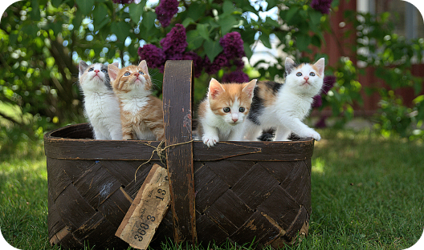

-

Найпопулярніші породи котів: який кіт підходить вам?
Вивчіть найпопулярніші породи котів і їхні особливості, щоб зробити інформований вибір, який підходить саме вам.
-

Як піклуватися про вашого пухнастого друга: догляд за котом
Дізнайтеся про основні аспекти догляду за котом, включаючи годування, гігієну та взаємодію з вашим улюбленцем.
-

Забавні факти про котів, які вас здивують
Веселі та цікаві факти про котів, які піднімуть вам настрій та розкажуть про їхні унікальність.
-

Історія та культурна значущість котів в усьому світ
Вивчіть, як коти впливали на культури різних народів та дізнайтеся історію спільного життя людей і котів.


Відео з пухнастиком